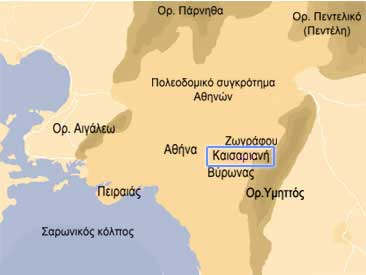

Η όμορφη Καισαριανή, περιοχή του ανατολικού λεκανοπεδίου Αττικής, είναι ανεξάρτητος
Δήμος από το 1934 και αριθμεί , σύμφωνα με την απογραφή του 2001, 26.803 κατοίκους.
Χτισμένη στις ΒΔ πλαγιές του Υμηττού, συνορεύει με τους Δήμους Ζωγράφου, Βύρωνα και Αθηναίων.
Το όνομά της το οφείλει στο ομώνυμο μοναστήρι, το
οποίο ιδρύθηκε στα τέλη του 11ου ή στις αρχές του 12ου αιώνα μ.Χ. και εξελίχθηκε σε σημαντικό πνευματικό κέντρο του χριστιανισμού.
Η Καισαριανή είναι μια σύγχρονη πόλη. Όμως ανάμεσα στις πολυκατοικίες και στους ασφαλτοστρωμένους
δρόμους εύκολα αναγνωρίζει κανείς παλιές κατοικίες, που γυρίζουν το χρόνο πίσω και μας φέρνουν στη μνήμη την ιστορία των πρώτων κατοίκων της. Την τραγική ιστορία των προσφύγων που ήρθαν από τα Βουρλά, το Σιβρισάρι και την ευρύτερη περιοχή της Μικράς Ασίας.
|
|

|